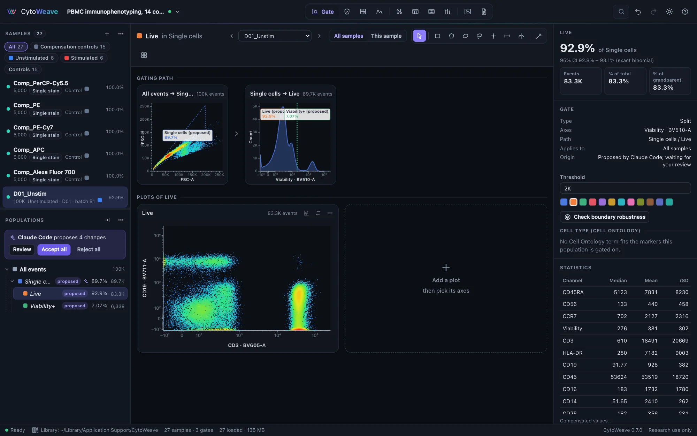
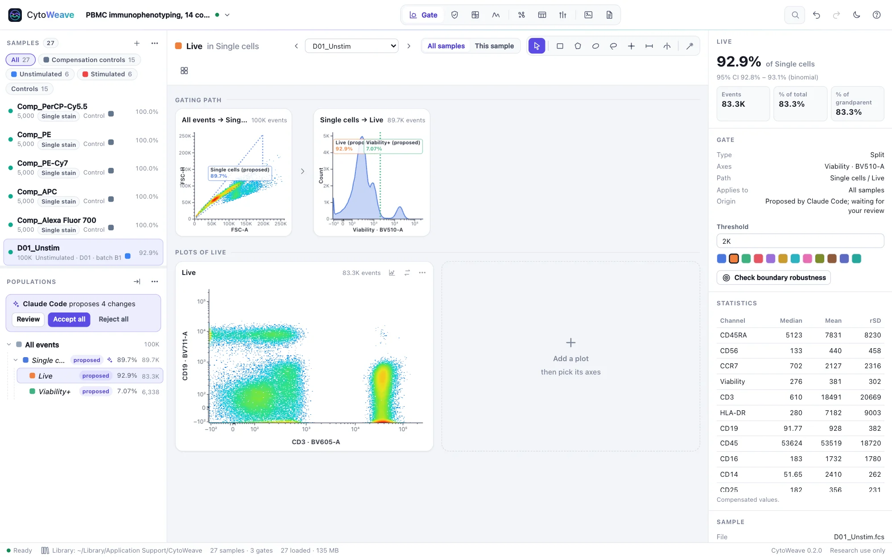

AI agents (MCP)
Ask an AI agent to open data, gate, compute statistics and write the methods, in the window you are watching. Its changes are proposals: nothing becomes part of your analysis until you accept it.
What an agent can do
cytoweave mcp is a Model Context Protocol server. Through it, an agent such as Claude Code can:
- open FCS files, folders, workspaces and example experiments, and read the samples, channels, markers and gating tree;
- propose gates from coordinates, or find them from the data's density (the magic wand, singlets on area against height, or the valley between two modes);
- rename, recolor or delete populations, and propose a compensation matrix computed from the controls;
- compute population statistics and tables across samples, and look at plots as images;
- review a gate across the cohort, compare groups of samples, write a methods paragraph and export Gating-ML.
The agent works through the same actions as you do, in the window you see. You can watch every step, take over at any time, and undo anything.
Setting it up
Claude Code
$ claude mcp add cytoweave -- ~/.local/bin/cytoweave mcpUse the full path to the program: agents often start programs without your shell's PATH. On Windows the installer puts it in %LOCALAPPDATA%\Programs\CytoWeave\cytoweave.exe. Then ask, for example:
Open the PBMC example, gate cells, singlets and live cells, then CD3+ T cells
and their CD4 and CD8 subsets, and tell me how the CD4:CD8 ratio differs
between stimulated and unstimulated samples.Claude Desktop and other clients
Add the server to the client's configuration; for Claude Desktop, claude_desktop_config.json:
{
"mcpServers": {
"cytoweave": {
"command": "/Users/you/.local/bin/cytoweave",
"args": ["mcp"]
}
}
}Options go after mcp: --port (default 8770; the next free one is used), --data-dir (the workspace library) and --window app|browser|none (how the window opens when a tool needs it). Proposals and the propose_compensation and proposals tools need CytoWeave 0.2.0 or later, adapt_gate 0.3.0, and check_robustness 0.4.0.
Reviewing proposals


- New gates appear at once, marked proposed: dotted on the plots and in italics in the population tree. Their counts are real, so you can judge them, and the agent can gate on them.
- Renaming or deleting gates you have accepted, and compensation matrices, are held. The tree shows a held rename next to the name (→ new name) and strikes through a population the agent proposes to delete.


A strip above the population tree says who proposes how many changes. Click Review for the list, with each new population's frequency and a Show button, then Accept all or Reject all. Rejecting removes the proposed gates together with anything drawn under them since; CytoWeave asks first in that case.
The change log records each decision: what was proposed, by which agent (the name its MCP client gives, such as Claude Code), and whether you accepted or rejected it. Accepted gates keep that origin, and the inspector and the methods paragraph show it. The agent can ask for the outcome with the proposals tool.
Tools
| Tool | What it does |
|---|---|
workspace_summary | Samples (events, role, metadata, channels and markers), groups, the gating tree of the current sample with counts, compensation, derived results, and what the window shows |
open_files | Opens FCS files, folders, CytoWeave or FlowJo workspaces, or Gating-ML, by absolute path |
open_example | Generates and opens a simulated example experiment |
select | Shows a sample, population or view in the window |
list_populations | Every population's path, gate, count, % of parent and % of total for a sample |
population_statistics | Count, frequencies and per-channel statistics of a population |
statistics_table | A statistic of populations across samples or a group |
render_plot | A PNG of a plot with its gates |
create_gate | Proposes a rectangle, polygon, ellipse, range, quadrant or split gate from data coordinates |
auto_gate | Proposes a gate found from the data: a density basin around a point, singlets, or the valley between two modes |
edit_gate | Renames, recolors or deletes a population (held for review unless the agent proposed it) |
propose_compensation | Computes a spillover matrix from the single-stain controls and proposes it for the samples |
proposals | The agent's open proposal and your recent decisions |
review_gate | A gate's frequency on every sample with a robust z-score and boundary robustness, outliers first |
adapt_gate | Adapts a gate to every sample with a confidence for each: confident adjustments are proposed, uncertain samples listed for you to check; groupBy keeps one gate per donor or subject |
compare | Tests a statistic between groups of samples defined by annotations, optionally paired |
check_robustness | Repeats a two-group comparison under other reasonable analysis choices (gate boundaries, adapted gates, QC, compensation, test) and reports whether the conclusion holds, mostly holds or is fragile, and which choices change it |
methods | A methods paragraph with numbered references |
export_gating_ml | The gating strategy as Gating-ML 2.0 |
Populations are named by name (when unique), by path (Cells/Single cells/CD3+) or by id; channels by detector (FITC-A) or marker (CD3). Gate coordinates are data values, as on the plot axes, on each channel's scale: a range gate on CD3 above 1,000 is {"min": 1000}.
Privacy and how it works
cytoweave mcp starts CytoWeave with remote control on and speaks JSON-RPC on standard input and output. A tool call becomes an action that the server forwards to the open window, which performs it with the same code as the user interface and posts the result back, one action at a time. Everything stays on your computer: the server accepts requests only from this computer, and opening files by path is limited to the agent connected over MCP or to scripts holding the token CytoWeave prints at startup. What the agent's model sees of your data is what the tools return: counts, statistics, gating trees and plot images.
The full reference, including coordinates for every gate type, is docs/MCP.md in the repository.